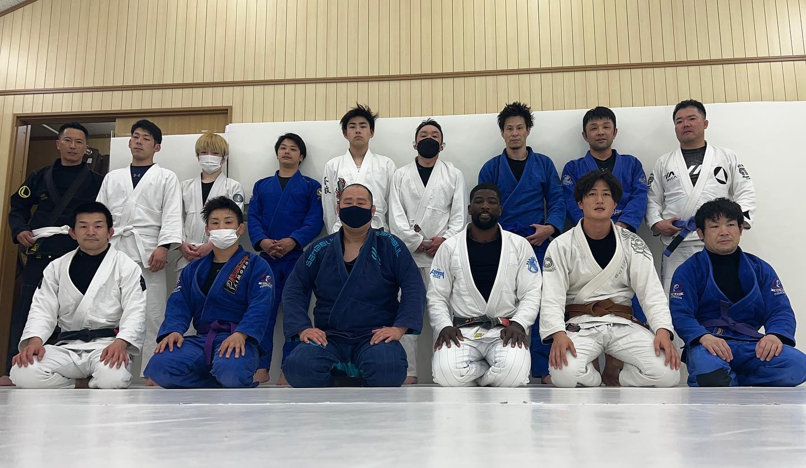
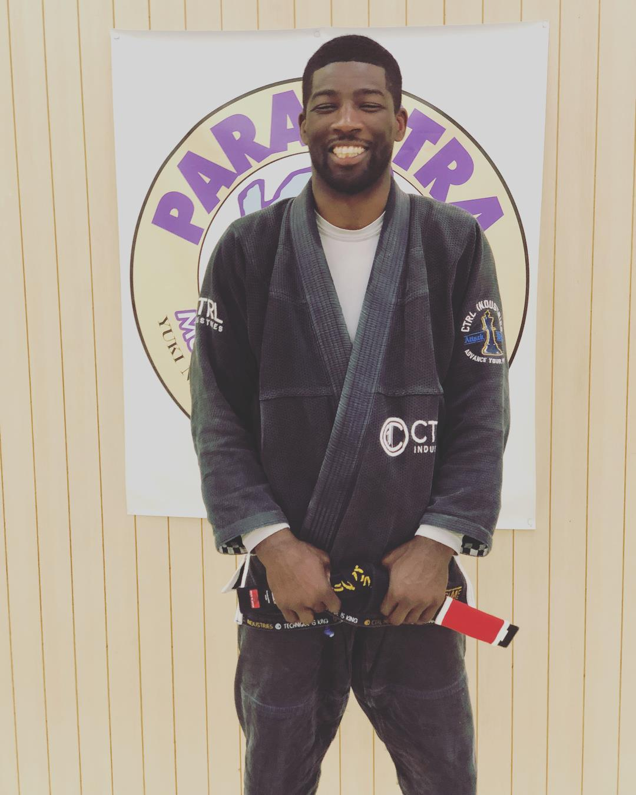

What is One Love Jiu Jitsu Club?
One Love Jiu Jitsu Club is a non-profit community program in the heart of Gifu City. The goal of the program is to build a family like training environment for all ages and skill levels. Martial arts can not only teach you to protect yourself but it also teaches many important life skills, such as perseverance, hard work, dedication, teamwork and many others skills that can help you in your everyday lives.
How much does it cost?
As was stated earlier, One Love Jiu Jitsu is a non-profit martial arts club. We do however charge a $20 fee to our adult members. Children and senior citizens do not have to pay a fee. The fee is strickly for maintaining our traing facility. Any extra funds will go towards community events or providing gis for children whose families can't afford them.
Instructors
Breon Curry
Breon is an American black belt who has trained in Brazilian Jiu Jitsu for more than a decade. He recieved his black belt from Yuki Nakai, the head of Paraestra Jiu Jitsu team, and is currently the head jiu jitsu instructor at Paraestra Gifu and One Love Jiu Jitsu Club. His lessons are primarily taught in Japanese but can teach in English when necessary.
Photos
One Love Jiu Jitsu Club maintains a family friendly mat space filled with smiles and laughter.
Please come and join us!